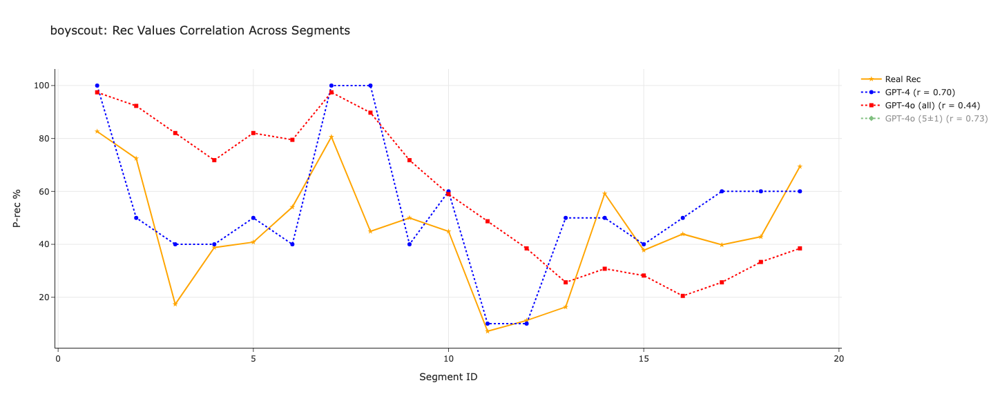
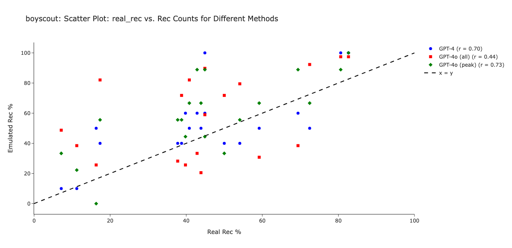
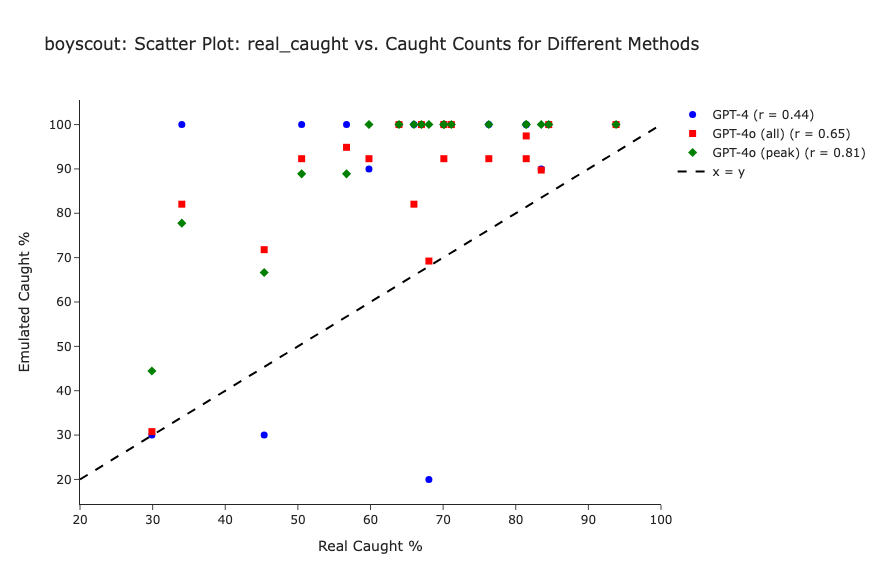
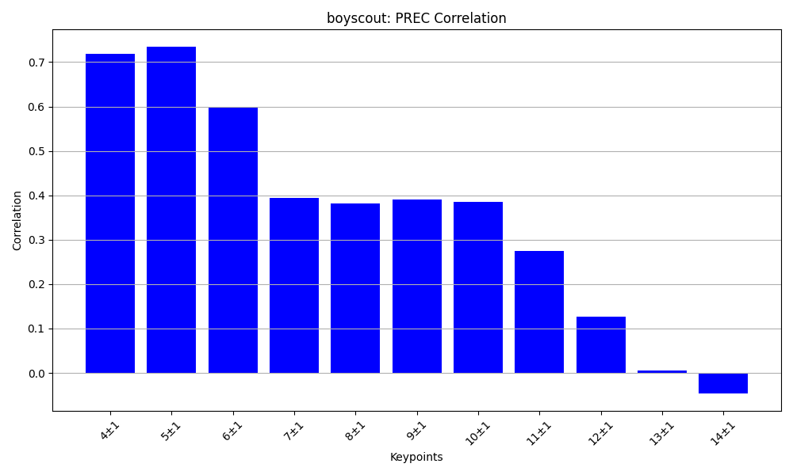
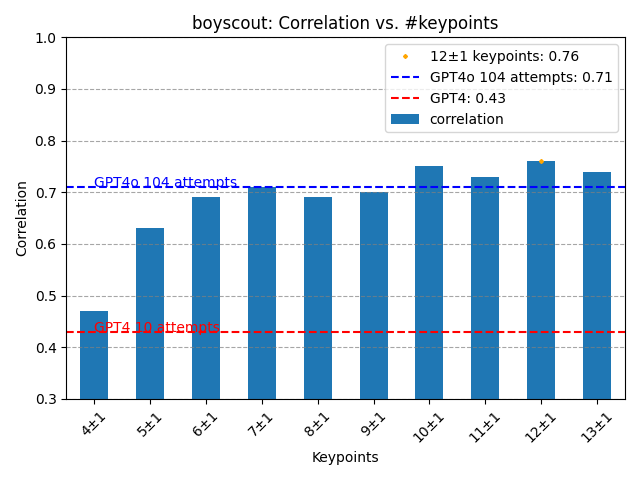

Report on Emulating Human Memory for Boy Scout Story
Here is a report for emulating human memory for the Boy Scout story. We can consider two metrics to evaluate the
quality of the emulation:
- Recognition: What are the details recalled by the LLM/human.
- Caught: What are the key points that are recalled by the LLM/human.
I have prepared two plots with the x-axis showing segments and the y-axis indicating the probability of human/LLM
to recall the segment. In these plots, I present two methods to emulate human memory:
- The first one is using GPT-4 prompt.
- The second one is using GPT-4o prompt with various numbers of key points.

Here are the html pages for other stories: Recognition Caught
Key Segment Analysis
Recognition: Look for example on "segment 8: 'and I started yelling Help!'"
This segment was important for the LLM
(mentioned in about 90% of the cases), but for humans, it was not recalled in 50% of the cases.
P-Caught: Look on "segment 4: 'but we was at the pier, marked off,'" This segment was important for the LLM
(mentioned in about 90% of the cases), but for humans, it was not recalled in 50% of the cases.
Here are links to raw data.
GPT4 Summaries with Recognition
GPT4o Summaries with Recognition
All types of Emulation
Below are scatter plots for the same data.


Here are the html pages for other stories: Recognition Caught
It is intersting to see how number of keypoints affects the emulation.


Here are the html pages for other stories: Recognition Caught
Speak about mean coverage for different keypoints: http://127.0.0.1:5500/html/mean_coverage_by_keypoints.html
Speak about moving average: http://127.0.0.1:5500/html/emulation_prec_by_gpt4o_correlation_moving_average.html
Speak about 2d Histogram.